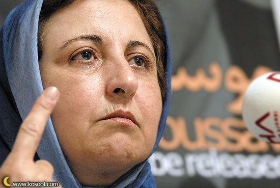
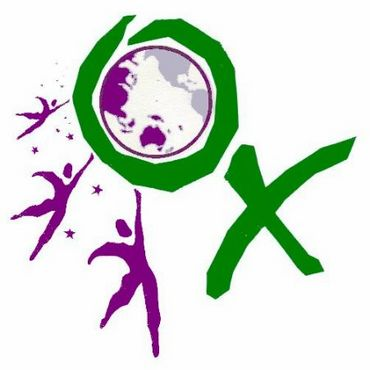
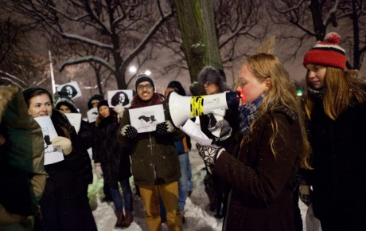
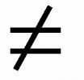
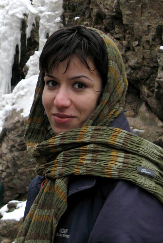

تغییر برای برابری
تغییر برای برابریمهمترین مسئله این است که این خشونت را فریاد بزنیم و بگوییم چه اتفاقی افتاده و سکوت بدترین راه حل است. در وهله بعد نگذاریم افرادی که بیگناه و مطلومانه در راه اهدافشان کشته شدند از یاد ببروند . بدین مناسبت من تاکید میکنم که تاریخ جنبش زنان و مبارزات زنان را باید تدوین کنیم..
پذيرش > واژه كليدها > صفحه بندی > ستون وسط
ستون وسط
مقالهها
-

شیرین عبادی : ریشه این خشونتها را باید در ضعف حکومت دید، باید این خشونت ها فریاد بزنیم
6 ژوئن 2011 -

دستبندهای بنفش برای اعتراض به خشونت علیه زنان/بیانیه تحلیلی دراعتراض به خشونت فراگیر علیه زنان در ایران
23 ژوئيه 2011فعالان حقوق زنان و جمعی از حامیان آنها با انتشار بیانیه ای نسبت به خشونت فراگیر علیه زنان در ایران اعتراض کرده و از مسئولان خواسته اند که واکنشی ضامن حفظ امنیت و شان زنان در ایران در برابر این وقایع از خود نشان دهند...
-
دفاعیه 38 نفر از موکلان از وکیل شان : ستوده شایسته تقدیر است نه تهدید و بازداشت
16 سپتامبر 2010, بوسيلهى pariبازداشت ستوده که شجاعت، جسارت و صداقتش در دفاع از حقوق متهمان ستودنی است نه تنها اقدامی غیر قانونی که نشانه بارز نقض حقوق بشر در ایران است.
-
 بیانیه کانون مدافعان حقوق کارگر به مناسبت روز جهانی زن؛مطالبات به حق زنان
بیانیه کانون مدافعان حقوق کارگر به مناسبت روز جهانی زن؛مطالبات به حق زنان
8 مارس 2013زنان در كشور ما نيز از گذشتههایِ دور براي كسب برابري انساني و رفع هر نوع تبعيض تلاشهای شايان توجّهي کردهاند. محدودیّتهای موجود و قوانینِ تثبیتکنندهیِ این محدودیّت¬ها، يافتن اشتغال مناسب و كار در شرايط بهتر را براي زنان ناممكن كرده است. برایِ نمونه، زنان همچنان در مورد گرفتن تابعيّت ايراني براي همسر خارجي و فرزندان خود گرفتار تبعيض هستند؛ چندان كه فرزندان اين زنان نه فقط از حدّاقل کمکهایِ دولتي كه به نام یارانهیِ نقدي پرداخت میشود، بلكه حتّي از داشتن شناسنامهیِ ايراني هم محروم هستند و امكان تحصيل در مدارس ايراني از اين كودكان سلب شده است...
-

حمایت بین المللی از زنان مصری / ترجمه و تلخیص از شهرزاد امین
20 فوريه 2013بدنبال فراخوان سازمان های دفاع از حقوق زنان و جنبش عملیات ضد آزار و اذیتهای جنسی در راس آن، در مصر در روز 12فوریه بطور همزمان آکسیونهایی در سراسر دنیا برگزار شد. این آکسیونها در حمایت از زنان مصری که مورد حمله و تجاوز جنسی قرا گرفته اند برگزار شد.
جنبشهای زنان در بیش از 35 کشور تظاهراتهایی در مقابل سفارتخانه های مصر در حمایت از خواهران مصری خویش برگزار کردند. در این آکسیونها همچنین مردانی نیز جهت اعلام انزجار خویش از شدت یافتن تجاوزات جنسی سیاسی که در مصر جریان دارد، شرکت کردند. در استکهلم نیز حدود پنجاه نفر به این تظاهرات بین المللی پیوسته و در مقابل سفارت مصر گرد هم آمدند...
-

"موفقیت" کمپین؟ / خلیل طالقانی
30 مارس 2010, بوسيلهى pariبه طعنهای تلخ گفت کمپین یک میلیون امضاء به جزء کوچکی از اهدافش نزدیک میشود. در ماجرای بازداشتها و محاکمههای اخیر تقریباً هیچ تبعیضی بر زنان روا نمیشود و حق زنان را نیز به اندازۀ مردان کف دستشان میگذارند. تلخی این طعنه وقتی بیشتر به جان مینشیند که دریابیم در این میانهای که "ز منجنیق فلک سنگ فتنه می بارد" سهم زنان و مردان از این سنگ هم یکسان نیست.
-
 آسیب شناسی کمپین یک ملیون امضا؛ نقدی از دورن/ زهره اسدپور
آسیب شناسی کمپین یک ملیون امضا؛ نقدی از دورن/ زهره اسدپور
24 ژوئن 2010, بوسيلهى koocheجنبش های اجتماعی اغلب دوره های شکوفایی و رکود را به توالی در کارنامه خود دارند. اگر دوره های شکوفایی را زمانی بدانیم که جنبش ها نمود اجتماعی وسیع تری می یابند و افراد بیشتری به آن می پیوندند، دوره های رکود را باید زمان بازاندیشی فعالیتها و افزودن بر غنای تئوریک جنبش ها نامید.
-

"پروانه" ی زمانه من/ الناز انصاری
1 دسامبر 2009, بوسيلهى pariچه می دانستم این تماس خبر تولد هزارباره یک افسانه است. یک کابوس: «پروانه امروز از خونه اش فرار کرده. بچه هاش رو گذاشته و رفته». زیبایی اش یادم آمد و آن تسلیم کهن در رفتار و صدایش. بیش تر از همه زیبایی عجیب اش. انگار همه افسانه ها برای جاودان شدن نیاز به زن زیبایی دارند. می دانم قصه پروانه ی ما هم افسانه می شود. او زیباتر از آن است که مالکان قصه ها رهایش کنند.
-
 در ستایش یک امضاء از یک میلیون امضاء
در ستایش یک امضاء از یک میلیون امضاء
27 اوت 2010سخن از روزی خاص در زندگی ما زنان است. روزی که جنبش زنان ایران گامی بزرگ برای رسیدن به مطالبات خود برداشت. کمپین یک میلیون امضاء در این روز متولد شد و به راهش ادامه داد. این حرکت نه تنها جنبش زنان را متحول کرد که در سالهای بعد روی جنبشهای اجتماعی ایران تاثیر گذاشت. به راستی این روز چگونه شکل گرفت و جنبش زنان را دگرگون کرد؟
-
نظرات دکتر مصدق در مورد بانوان / حمید رضا مسیبیان
20 اوت 2010به جرات باید گفت که دکتر مصدق حداقل از بعد از مشروطه یکی از اولین و معتقدترین افراد به حقوق زنان در ایران بوده است. وی از یک سو زنان را «ملکۀ خانه» می نامید و از سوی دیگر ستایشگر فعالیت¬ها و مبارزات زنان آزادی¬خواه در انقلاب مشروطه بود. در دوران نخست¬وزیری¬اش هم تلاش¬هائی برای اعطای حق رای به زنان انجام داده بود که در آن زمان با مخالفت شدید روحانیون برجسته راکد مانده بود. همچنین به شدت مخالف چند همسری مردان بوده و به برابری حقوق زنان مردان تاکید داشته است...
0 | ... | 360 | 370 | 380 | 390 | 400 | 410 | 420 | 430 | 440 | 450